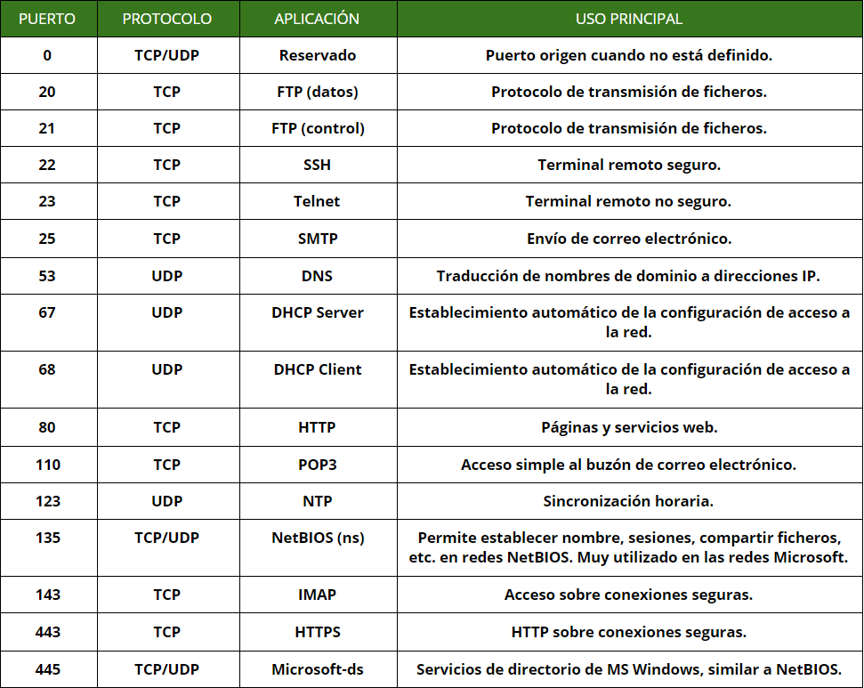
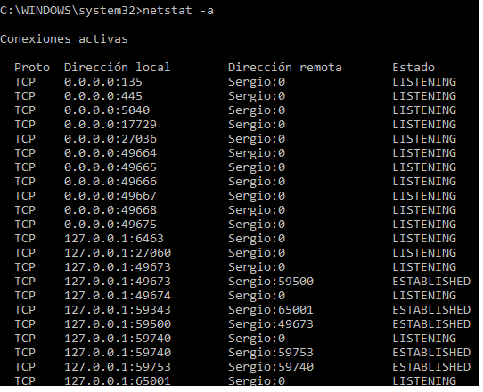
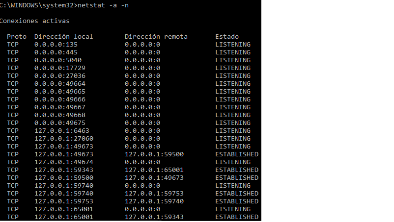
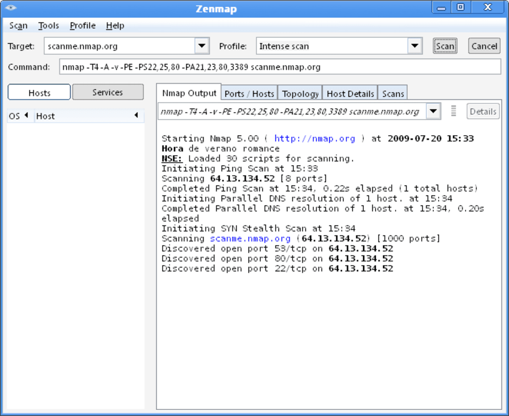

Capa de transporte
La capa de transporte se define como una capa que proporciona un servicio de comunicación directo
y eficiente entre las apliaciones que se ejecutan en diferentes máquinas.
Hay varias cosas importantes que debemos de saber antes de seguir avanzando y que aprenderemos en esta guia, lo más importante son los protocolos UDP y TCP, los principales puertos de la capa, sus principales aplicaciones y características.
1Puertos de la capa de transporte
Tanto UDP como TCP utilizan puertos de 16 bits para identificar las aplicaciones o procesos en la comunicación entre host.
El programador de aplicaciones gestiona y decide a qué puertos deben conectarse los clientes.
Estas personas podrán elegir entre 0 y 65535 que es el rango de esos 16 bits.
Sin embargo, la IANA (Autoridad de Control de Número de Puertos) hace las siguientes reservas:
1. Los primeros 1024 puertos son dedicados a los puertos de sistema y se asocian a aplicaciones principales de internet y servicios en red de los sistemas operativos.
2. Los puertos del 1024 al 49151 son los puertos del usuario y son asignados a aplicaciones no tan frecuentes.
3. Los puertos 49512 al 65535 reciben el nombre de puertos dinámicos y/o privados, son puertos que la IANA no asigna, por lo que necesitamos utilizar un puerto no estándar en la red local para utilizar cada uno de ellos.
Los puertos estándar más usuales se muestran en la siguiente tabla:

2Protocolos de la capa de transporte
Después del video anterior y saber de que va cada uno de los principales protocolos, empezaremos a hablar del protocolo TCP.
TCP (Transmission control protocol)
El protocolo TCP dispone de un formato y unas caracteristicas, y tambien hablaremos de los estados de la conexión TCP
Empezaremos por una breve introducción a las características y continuaremos con sus servicios y consecuencias
Como ya sabemos, el protocolo TCP se caracteriza por colocar segmentos en orden cuando vienen del protocolo IP. Controla el flujo
de los datos y así evita la saturacion de la red, es decir, permite que los datos se formen en segmentos para darselos al protoclo IP.
Características principales del modelo TCP
En este punto, hablaremos de los servicios que ofrece este protocolo, como trabaja y sus consecuencias.
1 ¿Como trabaja este protocolo?
Trabaja de una manera peculiar, envía datos desde los procesos de un host a otro host, antes de eso TCP ya ha establecido conexión lógica entre ambos
para enviar toda la información. Una vez haya acabado ese proceso de comunicación, si ya no se necesita la conexión, se destruye. Estas conexiones son de tipo punto a punto.
2 Servicios que ofrece el protocolo
Aparte de ser uno de los protocolos más famosos, es el que se utiliza actualmente, de manera que dispone de muchos servicios. En esta guia
solamente nombraremos unos cuantos, al menos los más importantes como pueden ser:
- Multiplexación de conexiones entre procesos y/o aplicaciones
- Fragmenta los bloques de datos para viajar sobre la capa que se utilice
- Detecta errores de transmisión en los segmentos
- Entrega fiable de los segmentos
- Elimina los segmentos que llegan duplicados
- Controla el flujo y de congestiones para adaptar la velocidad.
Estos son los principales servicios que ofrece este protocolo y es por eso por que destaca
tanto y tiene tanta utilidad, pero no todo es positivo, ya que tiene también sus consecuencias.
3 Consecuencias del protocolo
Todos los servicios hablados anteriormente como fiabilidad y control de errores en segmentos duplicados son buenos para las redes, sin embargo,
esta fiabilidad y la posibilidad de control de flujo y de congestiones tienen un elevado coste a nivel de eficiencia, asi que, comparado con UDP,
TCP es un protocolo mucho mas lento. TCP sigue siendo buena opción para aplicaciones que necesiten fiabilidad en la entrega, pero no para aquellas que
necesiten comunicarse a tiempo real.
UDP (User datagram protocol)
UDP es un protocolo mucho mas sencillo que el TCP, ya que este protocolo solo se dedica a la capa de transporte y tiene menos funciones y caracteristicas que el
modelo TCP/IP. Al igual que antes, hablaremos de los servicios, sus características principales y sus consecuencias, sin olvidar las aplicaciones en las que se
utiliza este protocolo.
Para empezar hay que recordar que en este protocolo UDP, la PDU recibe el nombre de datagrama en lugar de segmento.
1 Servicios que ofrece el protocolo
- Multiplexación de envíos entre procesos y/o aplicaciones por encima de un mismo enlace de red.
- Detección de errores en la transmisión entre extremos para cada datagrama.
2 Características generales del protocolo:
- Cada datagrama se envia de forma independiente al resto
- UDP no ofrece ningun mecanismo que garantice al remitente que los datagramas han llegado a su destino
- No existe ningun mecanismo que evite las congestiones
- No existe mecanismo que permita garantizar que los datagramas lleguen en orden
- No dispone de ningun mecanismo de fragmentación ni de gestion de fragmentos, sino, que la propia aplicación debe dividir su información.
3 Consecuencias del protocolo:
Debido a su extrema sencillez, este protocolo permite elevadas velocidades de transferencia, pero sin garantia. Es muy útil para aplicaciones que necesitan funcionar
a tiempo real, siempre y cuando se puedan eliminar esos datagramas que no lleguen o no lo hagan a tiempo.
Otra consecuencia es que no requiere confirmación de la recepción del datagrama por parte del destinatario, permite broadcast y multicast.
4 Aplicaciones que utiliza UDP
Dispone de 5 aplicaciones en las que funciona este protocolo:
- Protocolo DNS
- Protocolo DHCP
- Protocolos de streaming de voz y video
- Protocolos de difusión y multidifusión de datos
- Algunos juegos online
3Caso práctico sobre la Monitorización de puertos
El comando que utilizaremos será netstat -a, tanto para Windows como para Linux.
Este comando muestra estadísticas del protocolo y conexiones TCP/IP actuales.

Si añadimos al comando anterior -n se mostraran direcciones y números de puerto en formato numérico:

4Caso práctico sobre conexiones abiertas en un host remoto
El comando más utilizado para el descubrimiento de puertos abiertos en un host remoto es el comando nmap que puede ser utilizado
tanto en Linux como para Windows.

5 Formato de la PDU
Video realizado por Adam Kempes